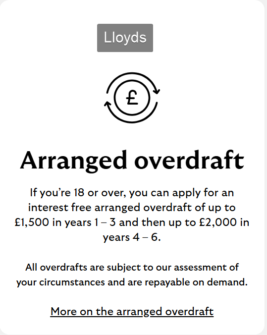
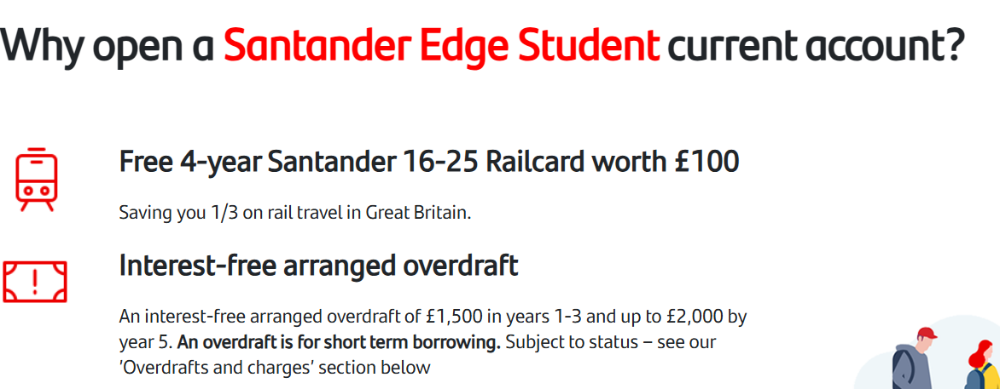
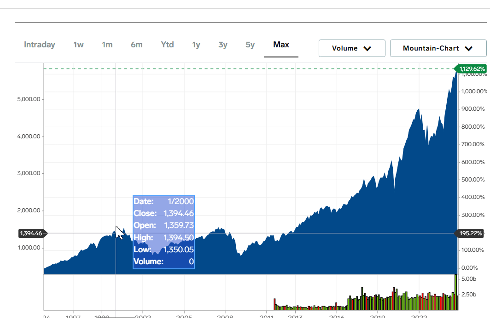

If you're a UK university student, there's no reason to not invest money. My investment method just happens to be the most safest braindead method I found which, using previous data, guarantees your investment to be worth while. Is it the best method? Absolutely not. Is it the most easiest that will work at some point? Probs. Is it good? No. Am I just saying random shit that doesn't really mean anything and can't be used against me? No! Every student in the UK can apply for an overdraft. It’s usually 1.5k but other offers exist.


What's so special about a 0% apr overdraft that you don’t need to payback until after you’ve completed your studies and only then, you pay back gradually? I remember trying to explain to my sister how the idea of a 0% apr loan is just batshit crazy, but some people don’t think as if they have a muzzle on their brain and only follow their stupid, but fast intuition instead of thinking of new intuitions for themselves. Some people hear „loan” and immediately don’t want to involve themselves in whatever’s at stake. 0% apr loans lose the banks money. How? Imagine you take out 1.5k immediately and put it into another account. You still receive student finance. You don’t pay it back until a year later, when inflation has just hit student finance. You now get more money from student finance because it’s worth less, but now you have more money to pay back your 0% interest loan with. Congrats, you just made money. Most banks give you 3 years to pay back the money you owe. This is my assumption. If your bank works differently, tough. This means we have 3+3 years (in a 3 year uni student course type shit) to pay it back. 6 years with 1.5k out on a 0% apr loan. Loans are necessary and it’s awful thinking to avoid loans at all cost. Sometimes in life you will need a loan. Money is hard. Investing is necessary and its awful thinking to avoid it as if it’s „gambling”. Investing is hard. Learn what stocks are. S&P 500 is an index comprised of the top 500 New York Stock Exchange (NYSE) stocks. You buy a share of S&P 500, they put 5% of your money towards Tesla, 5% towards Apple, 5% towards Microsoft… etc. It’s very safe and it has data to back it up All you have to do is invest money on the first of every month and I promise you will get money. Any day of the week works, but I chose the 1st because it’s nice. The amount does not matter, but remember you’re going to invest money and it goes up and down in percentages. Do an amount where you’ll know you’ll never touch it. I started with £50, but with frugal living realised £100 is quite easy. You are different, don’t live your life as if you’re me!!
The reason why I focus on S&P is because it’s safe. Let’s review when it went down. Dot com bubble. Took 6 years to return to normal. If you had been investing money every month: you would’ve had gains. 2008 economy crash or whatever, 4.5~ years to return back to normal. You definitely profit. Look at the graph yourself. 2020 Biden election? 6 months to get it back. You have 6 years to make gains with an index fund as safe and strong as possible, don’t be silly and invest Time in market beats timing the market. You will make more money by investing once a month, rather than timing all the dips perfectly. Thats why you must invest once a month. Increase your time in the market The best time to plant a tree was 20 years ago. The second best time is now.